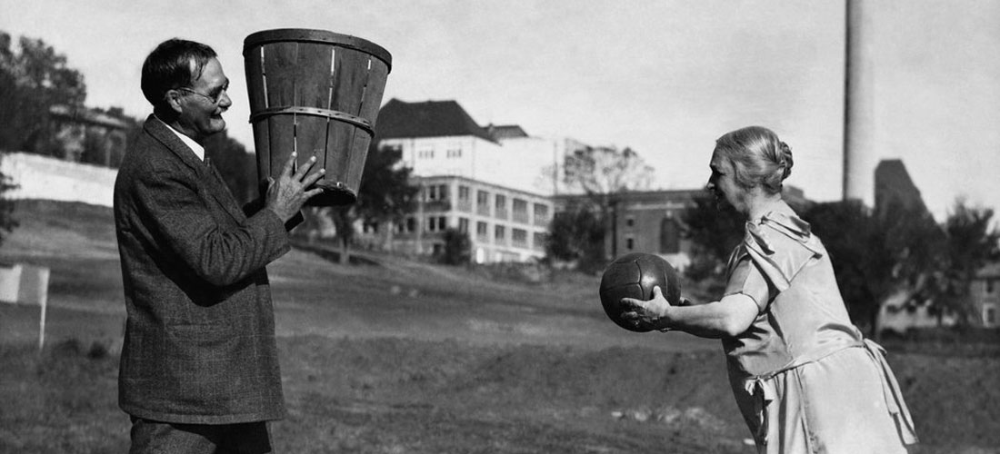

Origin

This page discusses the beginning of basketball and how the game was supposed to be played.
The Canadian
Basketball is a well known sport here in America but some don't realize that the sport was actually created by a Canadian educator. This educator was James Naismith, and he is the man that created basketball in 1891. Naismith was born during 1861 in Almonte, Ontario. Unfortunately, as a child he was orphaned but lived with his aunt and uncle for several years until he studied physical education at McGill University in Montreal.
The Canadian in America
After his studies, Naismith took on a job to become a pyshical educator at a YMCA located in Springfield, Massachusetts during 1891. Later that year, Naismithwanted to create an indoor sport for the winter because it was too cold to play outdoor sports such as football or baseball. So, he went ahead and created a new sport called basketball.
A Basket and a Ball
Naismith's original idea was to have a fruit basket nailed to the lower railing of a gym balcony and throw a basketball into them. The basketball was made out of leather that were stiched together and rubber inside.
